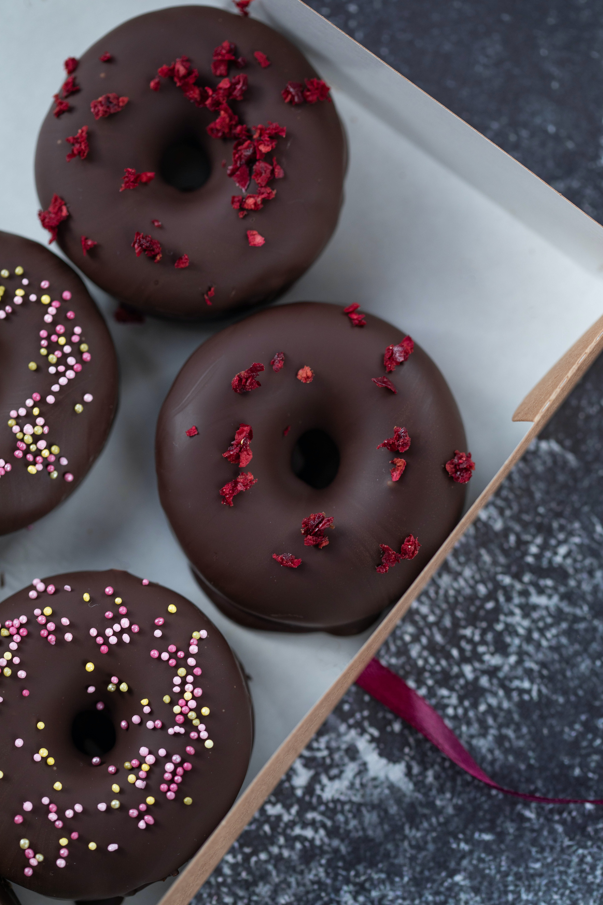
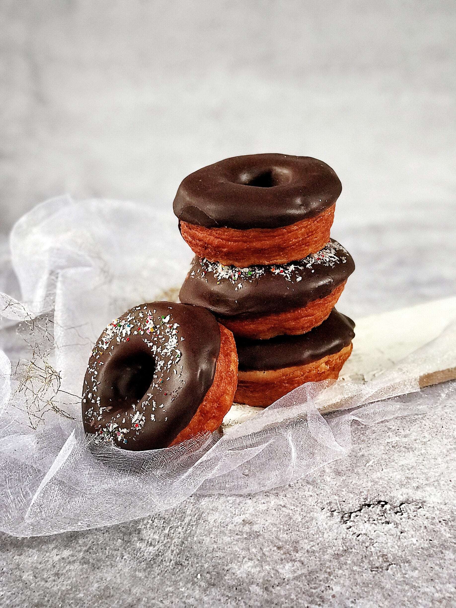
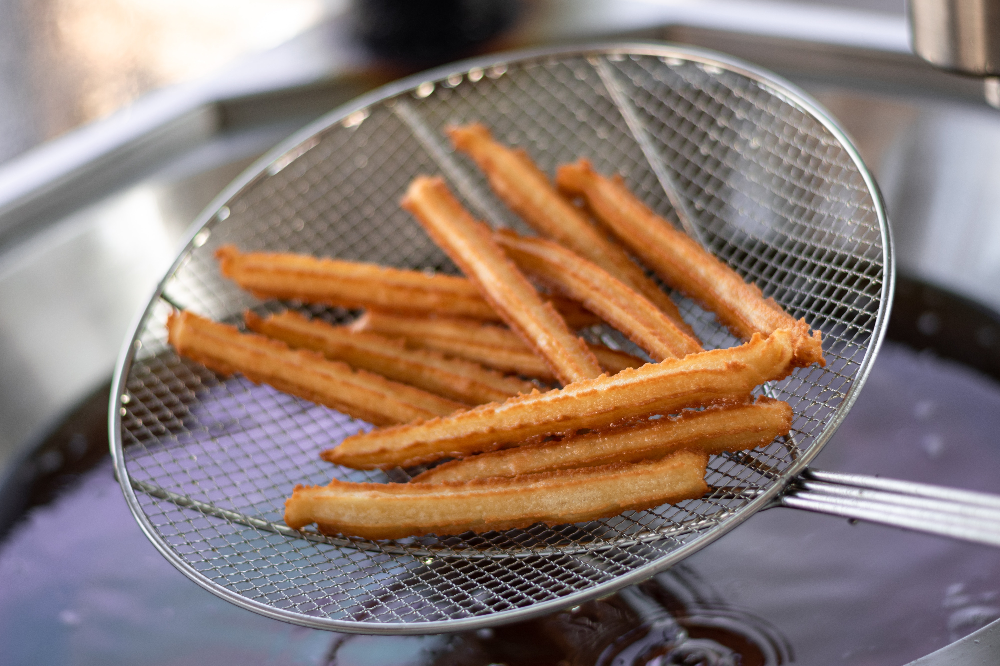
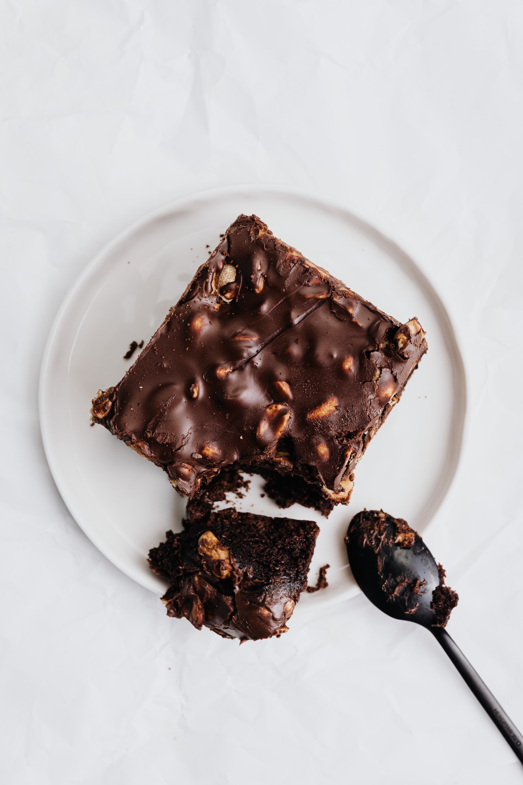
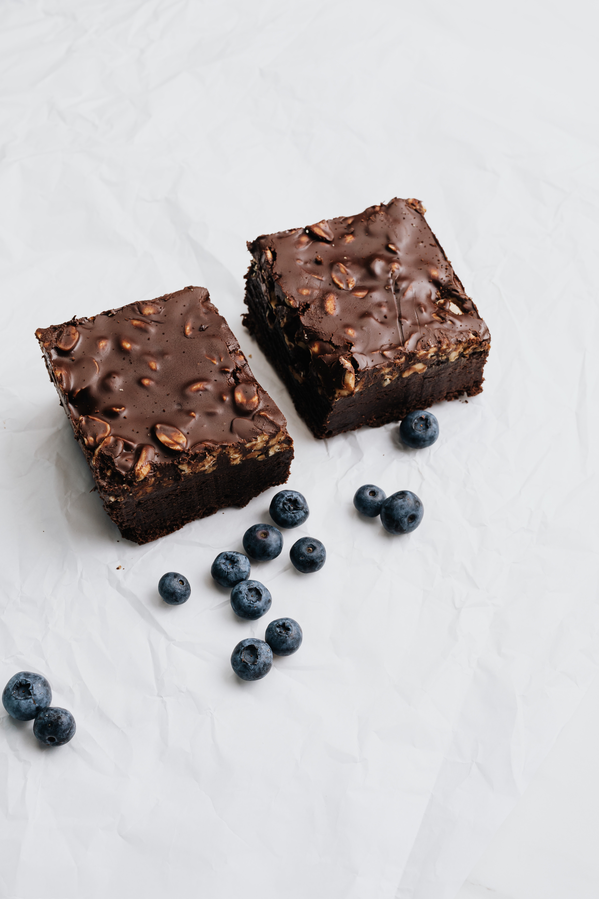

Donas


Donas caseras.
Ingredientes:
- 1 kilogramo de harina de trigo 0000 o común
- 260 gramos de azúcar
- 40 gramos de levadura fresca
- 80 gramos de mantequilla
- 4 huevos
- 1 cucharadita de vainilla
- 200 mililitros de leche tibia
Preparación de la masa
- Para empezar a hacer la masa para donas deberás colocar la harina en un tazón amplio, formar un volcán con ella y añadir en el centro la leche y la levadura. Truco: También puedes disolver la levadura en la leche tibia y agregar directamente esta mezcla.
- Hecho esto, derrite la mantequilla en el microondas y mézclala con la harina y el resto de los ingredientes, es decir, incorpora los huevos, el azúcar y la vainilla. Amasa todo junto hasta conseguir una textura lisa y elástica, lo que te llevará de 20 a 30 minutos. El resultado debe ser una masa que no se quede pegada en las manos, pero un tanto pegajosa al mismo tiempo. Truco: Si la masa sigue quedando demasiado pegajosa, añade un poco de harina. Si por el contrario la notas muy seca, vierte un poco de leche o agua.
- Cuando la masa de las donas no se quede pegada en tus manos, haz una bola con ella y déjala dentro del recipiente para que repose durante una hora y duplique su volumen. Es aconsejable que cubras la masa con un paño limpio o papel film. Recuerda que esta masa te servirá para hacer donas caseras horneadas y también donas fritas si lo prefieres.
- Pasado este tiempo, la masa tiene que haber duplicado su volumen. Entonces, sin golpearla, extiéndela con un rodillo hasta alcanzar 1 cm de grosor. Ten presente que todavía debe reposar un poco más, por lo que crecerá de nuevo. Truco: Para hacer donas fritas más esponjosas, sí puedes dejar 2 cm de grosor, pero para donas al horno recomendamos solo 1 cm.
- Con la masa ya estirada, corta las donas con el diámetro deseado y resérvalas sobre una bandeja forrada con papel vegetal o sulfurizado. Truco: Puedes utilizar tanto un molde especial para cortar las donas caseras como cualquier otro objeto redondo, como un vaso o copa tequilera por ejemplo.
- Cuando tengas las donas caseras ya cortadas, deberás dejarlas reposar durante 10 minutos más para que aumenten su tamaño.
- 7 Ahora tienes dos opciones, puedes hacer donas fritas o al horno. Para cocinar la masa para donas fritas solo debes calentar abundante aceite e introducirlas de una en una o en tandas pequeñas. Dales la vuelta a menudo para que se cocinen de forma pareja y Resérvalas sobre papel absorbente cuando estén doradas. Para hacer las donas caseras al horno, pecalienta el horno a 180 ºC y hornéalas durante 10 minutos. Ten presente que las donas horneadas quedan menos jugosas, con una consistencia esponjosa pero no tan blanda como la de las cocinadas en aceite. Truco: Si las haces fritas, utiliza una olla o cazo en lugar de una sartén porque las donas caseras necesitan flotar y no tocar el fondo.
- Si lo deseas, puedes decorar tus donas con frosting de fresa, ganaché de chocolate o glaseado blanco para donas. Otra opción totalmente válida y mucho más sencilla es espolvorear un poco de azúcar glas, consulta nuestra receta para elaborar el tuyo propio. Y ahora que ya sabes cómo hacer la mejor masa para donas, también puedes preparar algunas bebidas para acompañar la merienda: Malteada de chocolate o batido de avena
- El secreto de la receta de donas está en la masa, y es que la fermentación o el leudado de la misma gracias a la acción de la levadura es imprescindible si queremos conseguir unas donas bien esponjosas y tiernas. Por ello, hay que respetar siempre los tiempos de reposo de la masa entre fermentación y fermentación.
- El amasado es otra de las claves para conseguir unas buenas donas. Aunque sabemos que puede resultar un tanto pesado amasar durante tantos minutos, es necesario para trabajar bien la masa, conseguir que la levadura haga su trabajo y quede completamente lisa.
- A la hora de estirar la masa de las donas y luego formarlas y recortarlas, recuerda siempre enharinar la superficie de trabajo previamente y también el cortapastas o troquel que vayas a utilizar porque la masa de este tipo de fermentaciones es muy pegajosa y así evitarás que se quede pegada por todas partes.
Cómo hacer donas caseras perfectas:
Churros


Churros caseros.
Ingredientes:
- 250 g. harina de trigo todo uso (también se puede hacer con harina de panadería)
- 250 g. de agua
- 1 cucharadita de sal (8 gramos aproximadamente)
- Azúcar para espolvorear
- Aceite de oliva suave para freír o aceite de girasol
- Vas a necesitar una churrera manual o una manga pastelera con boca fina.
Preparación de la masa
- Ponemos la harina en un bol amplio. En una cazuela calentamos el agua con la sal.
- Cuando empiece a hervir la vertemos directamente y de una sola vez sobre la harina. Con una cuchara de madera integramos la harina con el agua. Nos quedará una masa muy pegajosa y bastante compacta.
- Cuando empiece a hervir la vertemos directamente y de una sola vez sobre la harina. Con una cuchara de madera integramos la harina con el agua. Nos quedará una masa muy pegajosa y bastante compacta.
- Con la masa ya estirada, corta las donas con el diámetro deseado y resérvalas sobre una bandeja forrada con papel vegetal o sulfurizado. Truco: Puedes utilizar tanto un molde especial para cortar las donas caseras como cualquier otro objeto redondo, como un vaso o copa tequilera por ejemplo.
- Cuando tengas las donas caseras ya cortadas, deberás dejarlas reposar durante 10 minutos más para que aumenten su tamaño.
- Ahora vamos a introducir esta masa en una churrera o manga pastelera. Este paso es fundamental para que los churros os salgan bien y no tengáis problemas con ellos a la hora de la fritura. La churrera compacta la masa y elimina el aire. Esto evita que los churros luego nos salten en el aceite, por eso es un paso muy importante. Si tenéis máquina para hacer churros la rellenáis con la masa. La mejor opción.
- Si no tenéis opción de hacer los churros con churrera, tenemos otra posibilidad, una manga pastelera con una boquilla en forma de estrella. Aunque no es lo recomendable, pues no quedan igual que con churrera. Aún así, hay gente que ha conseguido hacer buenos churros con manga. Las mangas pasteleras pueden ser de plástico desechable. Podéis encontrarlas en tiendas de utensilios de repostería o tiendas online de repostería creativa.
- Vamos haciendo las porciones de churros con la masa cruda sobre un paño de cocina en la encimera. En una forma de que se vaya enfriando la masa y evitar que se abran o estallen durante la fritura.
- Ponemos al fuego una sartén con abundante aceite de oliva muy suave o aceite de girasol.
- Cuando esté caliente introducimos las porciones de masa para freír. Antes de freír hay que medir la temperatura del aceite (a ser posible), entre 195º y 200º C para los churros o 230º C para las porras.
- Cocinamos a fuego medio para evitar que los churros se queden crudos por dentro.
- Servimos espolvoreados de azúcar blanquilla o azúcar glass (en polvo).
Brownies


Cómo hacer brownies de chocolate.
Ingredientes:
- 200 g. de mantequilla
- 180 g. de chocolate negro 70% mínimo (la marca que más os guste)
- 2 huevos L
- 225 g de azúcar normal o glas
- 30 g. cacao en polvo sin azúcar (os recomiendo el del 70%)
- ½ cdita. esencia de vainilla
- 120 g de harina de trigo
- Opcional (en este caso no lleva): 50 g. de nueces troceadas
Preparación del brownie de chocolate.
- Derretimos el chocolate troceado y la mantequilla a baño maría. Debemos ir removiendo en todo momento hasta conseguir una crema homogénea. Para hacer el baño maría, pondríamos una cazuela al fuego con agua y encima otra cazuela de forma que no toque el fondo.
- Si no podemos hacer un baño maría en casa, podemos derretir el chocolate con la mantequilla en el microondas. Calentaríamos el chocolate con la mantequilla durante 2 minutos, retiraríamos, y removeríamos. Repetiríamos la operación varias veces hasta conseguir una mezcla lisa y brillante.
- Dejaremos que la mezcla de chocolate y mantequilla se temple para continuar el proceso de preparación del brownie de chocolate. Reservamos.
- En un cuenco batimos los dos huevos con el azúcar, la esencia de vainilla y el punto de sal.
- Cuando tengamos una crema espumosa la añadimos al chocolate que tenemos reservado y templado. Iremos añadiendo los huevos poco a poco, integrándolos con el chocolate con la ayuda de unas varillas.
- Incorporamos el cacao sin azúcar y la harina. Mezclamos con las varillas para integrar estos sólidos en la mezcla.
- Engrasamos un molde de unos 20 x 20 cm. y lo forramos con papel de horno. Vertemos la mezcla del brownie y golpeamos ligeramente para regular la superficie.
- Precalentamos el horno a 170º C con calor por arriba y por abajo, sin la opción de ventilador. Horneamos el brownie durante 40 minutos.
- Cuando lleve ya 20 minutos en el horno tapamos con un poco de papel de aluminio para que no se queme la superficie y la costra quede perfecta y crujiente.
- Recordad que el brownie no debe queda crudo ni muy seco, tiene que tener un equilibrio. Por lo que debe hornearse en su justa medida. Es importante conocer vuestro horno. Os recomiendo pincharlo casi al final con un cuchillo y que salga con un poco de miga pegada. Esto no significa que esté crudo, ya que al sacarlo es tal el calor que mantiene dentro que seguirá cociendo.
- Lo dejamos enfriar en el molde unos 15 minutos, que baje su temperatura, sobre una rejilla. Cuando esté frío lo cortamos en varias porciones. Vuestros trozos listos para comer y disfrutar de vuestro brownie preferido.
Preparación y horneado final del brownie.
Pancakes


Receta de Hot Pancakes
Ingredientes:
- Leche 250 cc
- Azucar 50 g
- Huevos 2 Unidades
- Harina 200 g
- Polvo de hornear 12 g
- Sal fina 1 Pizca
- Manteca fundida 60 g
Preparación.
- Para comenzar, tamizamos los ingredientes secos. Luego, agregamos la leche poco a poco hasta que quede todo bien integrado. Finalmente, añadimos los huevos y la manteca fundida.
- Dejamos reposar la masa durante 30 minutos.
- Pasado ese tiempo, cocinamos en una sartén de un lado. Volteamos.
- Servimos tibios con el jarabe de arce y cream cheese o cubitos de manteca.